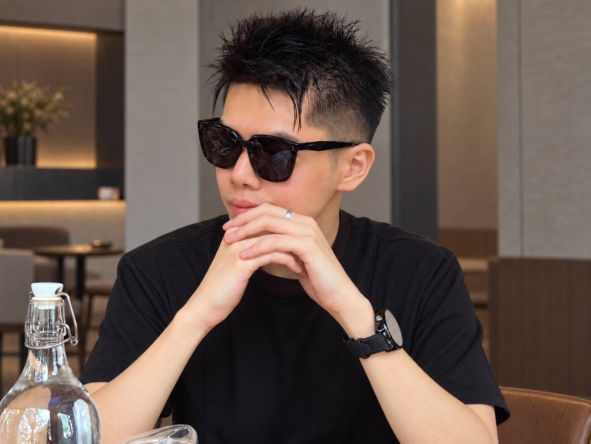

Cloud & infrastructure
Version-controlled provisioning across cloud and on-premises environments.
AWS · Azure · Alicloud · Terraform · Terragrunt · Atlantis · Ansible
I build repeatable infrastructure and make the path from a working idea to a reliable deployment clearer.
Kubernetes, infrastructure as code, GitOps, and observability across cloud and on-premises environments.
I work where cloud provisioning, container platforms, and day-to-day operations meet.
Reliable systems start with changes that are easy to repeat and easy to understand.
My work spans Kubernetes platform services, GitOps delivery, Terraform-based provisioning, and observability across AWS, Azure, Alicloud, and on-premises environments.
I have built deployment workflows, infrastructure definitions, monitoring stacks, certificate automation, and operational tools that reduce manual work and make production easier to support.

The tools matter when they make delivery repeatable, systems observable, and operations easier to support.
Version-controlled provisioning across cloud and on-premises environments.
Shared platforms and consistent application releases using containers and GitOps.
Signals and scripts that make recurring work and production issues easier to handle.
Virtual machine platforms that support flexible infrastructure.
Core services, administration, and access across Windows environments.
I am extending the same automation mindset into developer self-service and reusable cloud architecture.
Developing marketplace items and workflows that give developers a clearer path to commonly requested AWS services.
Building standard patterns for APIs, services, databases, secrets, compute, and containers with practical guardrails.
Working toward landing-zone patterns, policy as code, multi-account provisioning, and consistent Kubernetes standards.